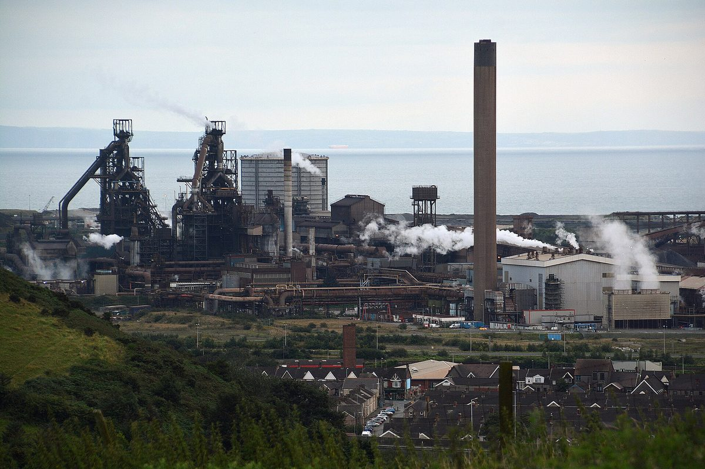

영국 웨일스 포트탤벗, 내셔널그리드 변전소 2곳 지역 기금 106만 파운드…쓰임새 주민 설문으로 정한다

타타스틸 제철소 전기로 전력 공급용 '마검 연결' 사업에 딸린 보상 성격 기금, 정부 지침 '변전소 1곳당 53만 파운드'와 같은 수준…연료비 지원 등 6가지 후보 내놓고 11월 26일까지 의견 받아, 지급 방식·심사 주체는 미정
영국 송전회사 내셔널그리드(National Grid)가 웨일스 포트탤벗에 변전소 2곳을 짓는 사업에 맞춰 106만 파운드 규모의 지역 기금을 열고, 그 쓰임새를 주민 설문으로 정하기로 했다. 기금은 타타스틸 포트탤벗 제철소의 전기로에 전기를 대는 '마검 연결(Margam Connection)' 사업, 곧 하버웨이 옆 기존 변전소 확장과 제철소 안 새 변전소, 둘을 잇는 지중 케이블 공사에 딸린 것으로, 건설 예산과 따로 마련되며 주민이 출자하거나 소유하는 설비가 아니라 설비를 받아들이는 지역에 주는 보상 성격의 돈이다. 내셔널그리드는 송전 사업 지역 기금에 관한 영국 정부 지침을 따랐다고 설명했는데, 3월에 나온 이 지침은 지역이 받아들이는 새 변전소 1곳당 53만 파운드를 권하고 있어 변전소 2곳에 걸린 이번 기금은 지침 금액과 같은 수준이다. 회사는 기술·훈련, 녹지, 공동체 시설, 청소년 서비스, 연료비 지원, 지역 기업 지원 등 6가지 쓰임새 후보를 내놓고 주민이 다른 쓰임을 더할 수 있게 했으며, 주민·기업·자선단체·공동체 모임·지방의원을 대상으로 11월 26일까지 설문을 받고 11월 6일과 7일 두 차례 현장 설명회를 연다. 다만 돈을 한 번에 줄지 몇 년에 나눠 줄지, 누가 심사 패널을 맡을지, 첫 돈이 언제 지역에 닿을지는 아직 밝히지 않았다. 지역구 웨일스 의회 의원 엘린 스티븐스(Elyn Stephens, 플라이드 컴리)는 큰 기반시설은 받아들이는 지역에 오래 남는 이익을 남겨야 한다고 말했고, 이 변전소 공사는 지반·인허가 문제로 연결이 6~8개월 늦어져 전기로 가동이 미뤄진 원인이기도 하다.
시민에너지 관점
변전소 1곳당 53만 파운드라는 정부 지침은 송전 설비를 받아들이는 지역에 몫을 돌려야 한다는 원칙을 금액으로 못 박았다는 점에서 의미가 있다. 그러나 설비를 내준 대가로 받는 기금은 결국 보상이어서, 지급 방식과 심사 주체조차 정해지지 않은 지금 주민 설문만으로 지역이 결정권을 가졌다고 보기는 어렵다. 덴마크가 2009년부터 2020년까지 새 풍력 사업 지분 20% 이상을 주변 주민에게 먼저 내놓게 했듯, 설비에서 나오는 이익을 주민이 주인으로서 길게 나눠 갖는 구조가 갈등을 줄이는 더 단단한 길이다. 국내 송전망 확충에서도 일회성 지원금에 그치지 말고 기금 운영에 주민 대표가 참여하게 하고, 지역 재생에너지 지분으로 이어지는 이익 공유 기준을 함께 만들어야 한다.
출처: Swansea Bay News 2026-11-04 Kit Peters 원문 보기
英ウェールズ・ポートタルボット、ナショナル・グリッドの変電所2か所に伴う地域基金106万ポンド…使い道を住民アンケートで決める
タタ・スチール製鉄所の電炉に電力を送る「マーガム接続」事業に付随する補償的な基金、政府指針「変電所1か所当たり53万ポンド」と同水準…燃料費支援など6つの候補を示し11月26日まで意見募集、支給方法や審査主体は未定
英国の送電会社ナショナル・グリッド（National Grid）が、ウェールズのポートタルボットに変電所2か所を建設する事業に合わせて106万ポンド規模の地域基金を設け、その使い道を住民アンケートで決めることにした。基金は、タタ・スチールのポートタルボット製鉄所の電炉に電力を供給する「マーガム接続（Margam Connection）」事業、すなわちハーバーウェイ脇の既存変電所の拡張、製鉄所内の新しい変電所、両者を結ぶ地中ケーブルの工事に付随するもので、建設予算とは別に用意され、住民が出資・所有する設備ではなく、設備を受け入れる地域に渡す補償的な性格の資金だ。ナショナル・グリッドは送電事業の地域基金に関する英国政府の指針に従ったと説明しており、3月に出たこの指針は地域が受け入れる新しい変電所1か所当たり53万ポンドを推奨しているため、変電所2か所にかかる今回の基金は指針の金額と同じ水準となる。同社は技能・訓練、緑地、地域施設、青少年サービス、燃料費支援、地元企業支援の6つの使い道の候補を示し、住民が別の使い道を加えられるようにしたうえで、住民・企業・慈善団体・地域グループ・地方議員を対象に11月26日までアンケートを受け付け、11月6日と7日の2回、現地説明会を開く。ただ、資金を一括で出すのか数年に分けるのか、誰が審査パネルを担うのか、最初の資金がいつ地域に届くのかはまだ明らかにしていない。地元選出のウェールズ議会議員エリン・スティーブンス（Elyn Stephens、プライド・カムリ）氏は、大きなインフラは受け入れる地域に長く残る利益を残すべきだと述べ、この変電所工事は地盤や許認可の問題で接続が6～8か月遅れ、電炉の稼働が先送りされた原因でもある。
市民エネルギーの視点
変電所1か所当たり53万ポンドという政府指針は、送電設備を受け入れる地域に取り分を返すべきだという原則を金額で定めた点で意味がある。しかし設備を受け入れた見返りとして受け取る基金は結局のところ補償であり、支給方法や審査主体さえ決まっていない今、住民アンケートだけで地域が決定権を持ったとは言いがたい。デンマークが2009年から2020年まで新しい風力事業の持ち分20%以上をまず周辺住民に提供させたように、設備から生まれる利益を住民が持ち主として長く分け合う仕組みこそ、対立を和らげるより確かな道だ。韓国の送電網拡充でも一時的な支援金にとどまらず、基金の運営に住民代表が加わり、地域の再エネの持ち分へとつながる利益共有の基準をあわせて作るべきだ。
出典: スウォンジー・ベイ・ニュース（Swansea Bay News） 2026-11-04 Kit Peters 原文を読む
英国威尔士塔尔伯特港，国家电网两座变电站配套社区基金106万英镑…用途由居民问卷决定
属于为塔塔钢铁厂电弧炉供电的"马格姆连接"项目附带的补偿性基金，与政府指引"每座变电站53万英镑"水平相同…提出燃料费补助等6项候选用途，征求意见至11月26日，发放方式和评审主体未定
英国输电公司国家电网（National Grid）配合在威尔士塔尔伯特港建设两座变电站的工程，设立规模106万英镑的社区基金，并决定通过居民问卷确定其用途。该基金附属于为塔塔钢铁塔尔伯特港钢铁厂电弧炉供电的"马格姆连接"（Margam Connection）项目，即扩建港湾路旁的现有变电站、在钢铁厂内新建一座变电站并以地下电缆连接两者；基金与建设预算分开，并不是居民入股或拥有的设施，而是给予接纳设施地区的补偿性资金。国家电网表示这是依照英国政府关于输电项目社区基金的指引，而今年3月发布的这份指引建议，地区每接纳一座新变电站给予53万英镑，因此涉及两座变电站的这笔基金与指引金额水平相同。公司提出技能与培训、绿地、社区设施、青少年服务、燃料费补助、扶持本地企业等6项候选用途，居民也可补充其他用途；问卷面向居民、企业、慈善团体、社区组织和地方议员，截至11月26日，并将于11月6日和7日举行两场现场说明会。不过，资金是一次性发放还是分几年发放、由谁担任评审小组、第一笔钱何时到达当地，公司尚未说明。当地选区的威尔士议会议员埃琳·史蒂文斯（Elyn Stephens，威尔士党）表示，大型基础设施应给接纳它的地区留下长久的利益；而这项变电站工程也因地基和许可问题导致并网推迟6至8个月，是电弧炉投运延后的原因。
市民能源视角
每座变电站53万英镑的政府指引，把"应把一份利益还给接纳输电设施的地区"这一原则以金额固定下来，这一点有其意义。但作为接纳设施的代价而得到的基金终究是补偿，在发放方式和评审主体都未确定的现在，很难说仅凭居民问卷地方就拥有了决定权。正如丹麦在2009年至2020年间要求新风电项目先向周边居民提供至少20%的股份，让居民以主人身份长期分享设施收益的结构，才是减少冲突更稳固的道路。韩国在扩建输电网时也不应止于一次性补助，而应让居民代表参与基金运作，并一并制定能延伸到地方可再生能源股份的利益共享标准。
来源: 斯旺西湾新闻（Swansea Bay News） 2026-11-04 Kit Peters 查看原文
Port Talbot, Wales, gets a £1.06 million community fund tied to two National Grid substations, with residents surveyed on how to spend it
The compensation-style fund comes with the 'Margam Connection' project powering Tata Steel's electric arc furnace and matches government guidance of £530,000 per substation; six options including help with fuel bills are on the table until November 26, while payment method and decision panel are undecided
Transmission company National Grid has opened a community fund of £1.06 million alongside its project to build two substations in Port Talbot, Wales, and will decide how the money is spent through a survey of local people. The fund comes with the Margam Connection project to supply power to the electric arc furnace at Tata Steel's Port Talbot works, which involves extending the existing substation off Harbour Way, building a new substation inside the steelworks and linking the two by underground cable; it is separate from the construction budget and is not an asset residents invest in or own, but compensation-style money for the community that hosts the equipment. National Grid says the fund follows UK government guidance on community funds for transmission projects, published in March, which recommends £530,000 for every new substation a community hosts, putting this fund for two substations at the level of the guidance. The company has listed six possible uses, namely skills and training, green spaces, community facilities, youth services, help with fuel bills and support for local businesses, and lets respondents suggest others; the survey is open to residents, businesses, charities, community groups and councillors until November 26, with two drop-in events on November 6 and 7. It has not yet said whether the money will be paid in one go or over several years, who will sit on any panel deciding between bids, or when the first money will reach the town. Elyn Stephens, the local Plaid Cymru member of the Senedd, said major infrastructure should leave a lasting benefit for the communities that host it, and the same substation work is also why the furnace has been delayed, after the connection slipped six to eight months because of ground conditions and planning.
Citizen Energy View
Government guidance of £530,000 per substation matters because it puts a figure on the principle that communities hosting transmission equipment deserve a share. But a fund paid in return for hosting equipment is ultimately compensation, and with neither the payment method nor the decision panel settled, a survey alone does not give the community real decision-making power. Just as Denmark required new wind projects from 2009 to 2020 to offer at least 20% of their shares to nearby residents first, letting residents share the gains from infrastructure as long-term owners is a sturdier way to reduce conflict. As Korea expands its transmission grid, it should go beyond one-off support payments by giving residents' representatives a seat in running such funds and by setting benefit-sharing rules that lead to local stakes in renewable energy.
Source: Swansea Bay News 2026-11-04 Kit Peters Read the original